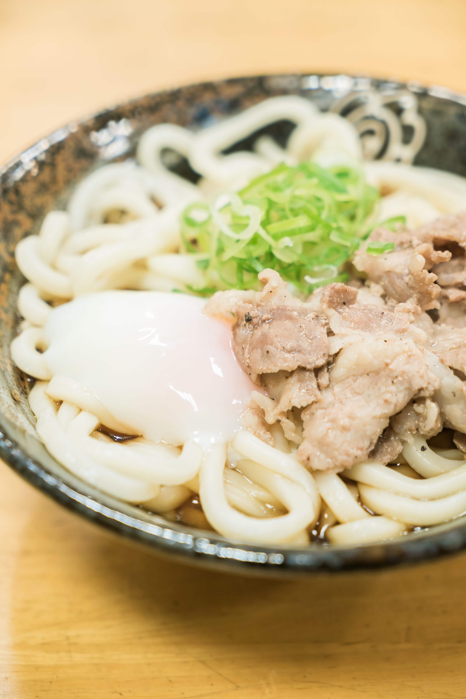

Pork Udon with Poached Egg

A simple Japanese-style pork udon served in a light savory broth, topped
with thin slices of seasoned prok, a soft poached egg, and freshly chopped scallions
over chewy udon noodles.
Ingredients
- 1 package frozen udon noodles
- 120-150g sliced pork
- 1 egg (for poaching or soft-boiling)
- Fresh green onions/scallions
- Udon broth
- 1-1.5 cups dashi
- 1-1.5 tbsp soy sauce
- 1 tsp mirin
- A pinch of sault
Directions
- Bring a pot of water to a boil and cook the frozen udon according to the package instructions (usually 1–2 minutes). Drain and set aside.
- In a small saucepan, heat dashi with soy sauce and mirin to make a light, warm broth; keep it gently simmering, not boiling.
- In a separate pan, cook the thinly sliced pork over medium heat until just cooked through; lightly season with salt and pepper.
- Poach or soft-boil an egg until the yolk is still runny, then set aside.
- Place the cooked udon in a bowl, pour the hot broth over the noodles, then top with the cooked pork.
- Gently place the egg on top and finish with chopped scallions.
Home